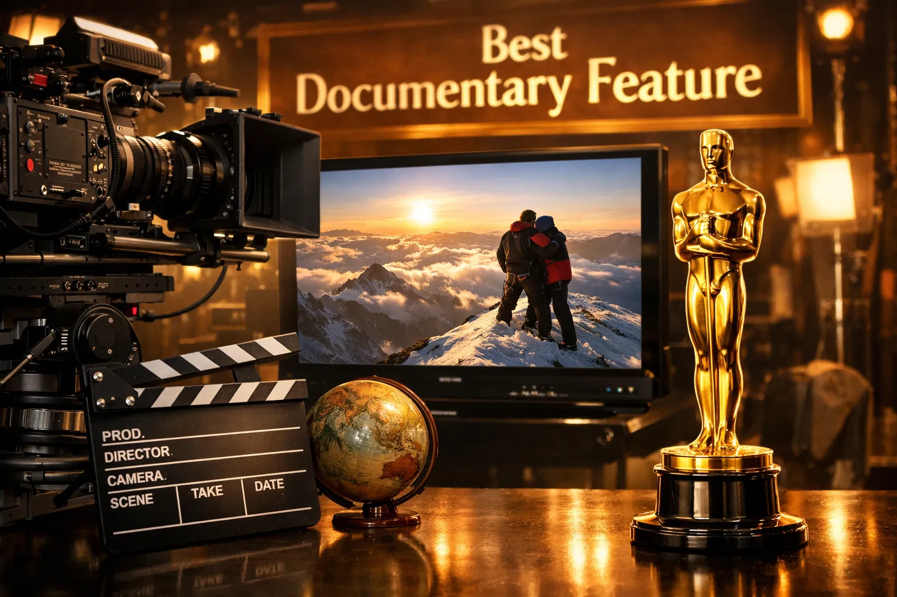
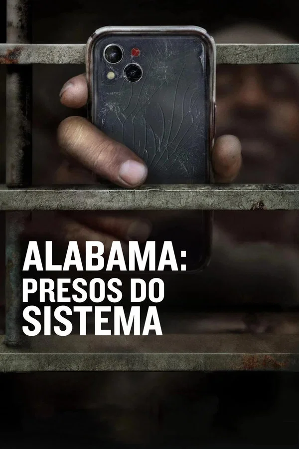
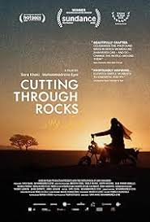
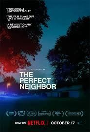

98th Annual Academy Awards
Melhor Longa Documentário
Conheça os candidatos à Premiação do Oscar 2026 por Melhor Longa Documentário.
Vencedor
Mr. Nobody Against Putin
Direção: Joshua Seftel
O Enredo: Narra a história real de um cidadão comum que, após um incidente local, inicia uma campanha digital de resistência que viraliza, desafiando a máquina de propaganda do Kremlin.
Destaque: A montagem é ágil, parecendo um thriller de espionagem. Ele oferece um acesso raro à vida cotidiana sob um regime autoritário e à coragem individual que nasce do desespero.

Alabama: Presos do Sistema
Direção: Andrew Jarecki e Charlotte Kaufman
O Enredo: O filme foca nas condições desumanas e no sistema de trabalho forçado que ainda ecoa o passado escravocrata da região. Ele utiliza depoimentos de detentos e ex-agentes penitenciários para expor a corrupção institucional.
Destaques: É um soco no estômago necessário. A crítica elogiou a forma como o documentário conecta estatísticas frias a histórias humanas devastadoras.
Embaixo da Luz Neon
Direção: Ryan White
O Enredo: Explora a vida de trabalhadores noturnos, artistas de rua e pessoas que vivem à margem do brilho das luzes de neon, revelando a solidão e a beleza que existem na escuridão urbana.
Destaques: A fotografia é o ponto alto. O uso de cores e som imersivo cria uma experiência sensorial que faz o espectador sentir a pulsação da cidade.

Cutting Through Rocks
Direção: Sara Khaki e Mohammadreza Eyni
O Enredo: Documenta a resistência de povos indígenas ou quilombolas contra grandes corporações. O título é uma metáfora tanto para a mineração quanto para a força dessas pessoas em romper barreiras políticas.
Destaques: A escala das imagens de satélite contrastadas com a vida simples na terra é poderosa. É o grande representante das causas ambientais da temporada.

Perfectly a Strangeness
Direção: Geeta Gandbhir
O Enredo: Investiga o desaparecimento de uma figura comunitária amada, revelando através de entrevistas que a "vida perfeita" da vizinha escondia uma rede de segredos, identidades falsas e manipulação psicológica.
Destaques: É fascinante pela forma como desconstrói a fachada da normalidade suburbana. Foi chamado de "o Gone Girl da vida real" pela imprensa especializada.